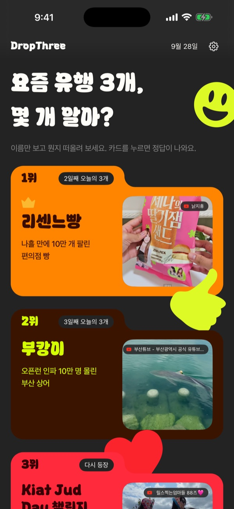
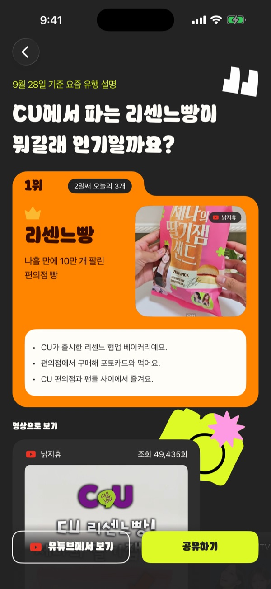
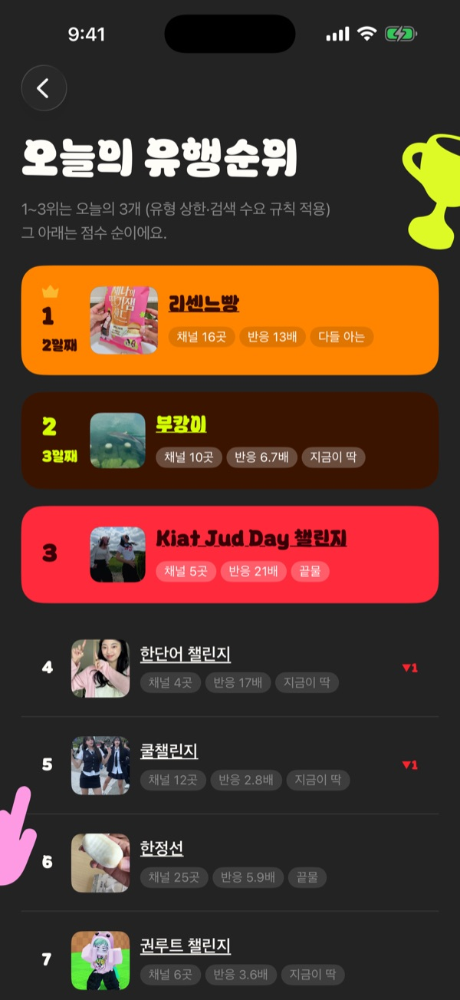
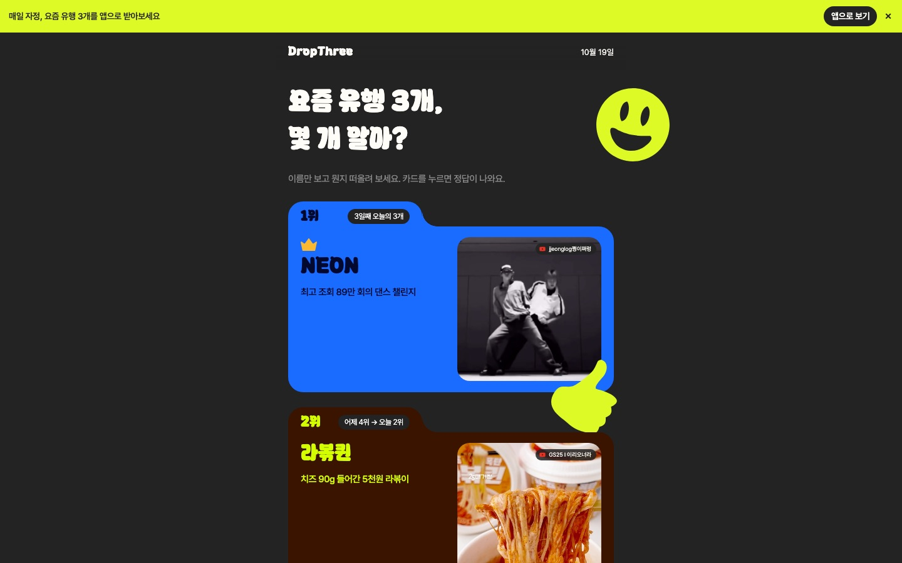
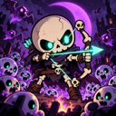
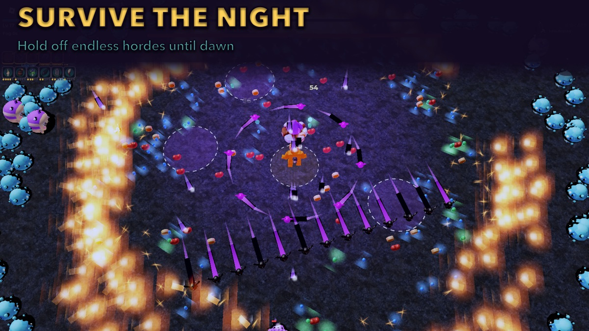
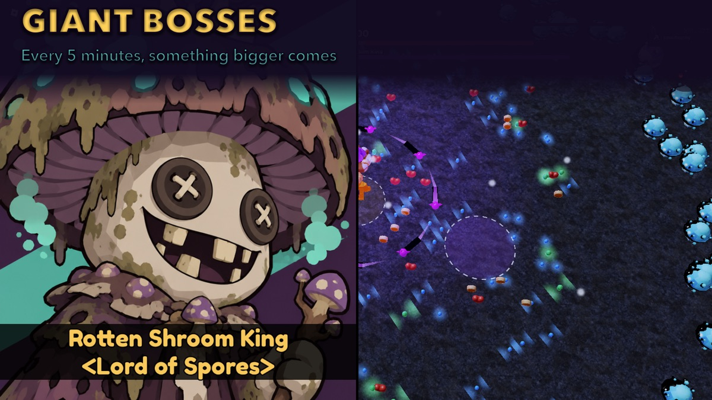
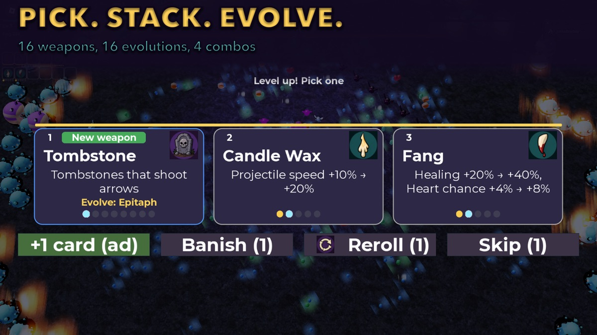
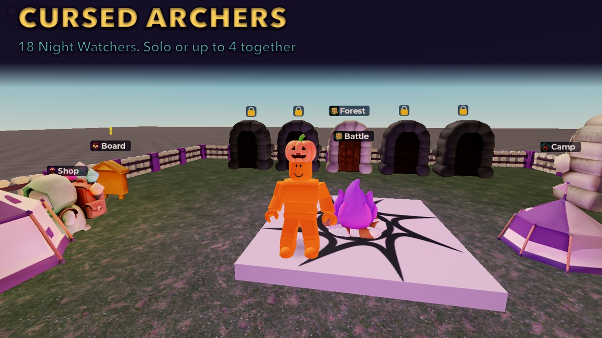

출시
드랍쓰리 (DropThree)
2026년 9월 시작. 웹 운영 중, App Store 출시
매일 자정에 "요즘 유행" 3개가 바뀝니다. 사람이 고르지 않습니다. 유튜브에서 여러 채널이 동시에 다루기 시작한 이름을 찾아서 순위를 매기고, 설명 글과 사진까지 붙여서 사이트와 앱에 올립니다. 서버 비용 없이 무료 API 한도 안에서 매일 돌아갑니다.




어떻게 고르나
- 검색량 순위를 쓰지 않고, 여러 채널에 동시에 퍼지는지를 봅니다.
- 유튜브 검색과 채널 RSS로 최근 2일 영상을 모으고, LLM이 제목에서 유행 이름을 뽑습니다. 제목에 실제로 있는 이름만 인정합니다.
- 채널 3곳 이상, 그 채널들 평소 반응의 1.2배 이상, 뉴스 비중 30% 미만일 때만 후보가 됩니다.
- 점수는
log2(1+채널 수) x log2(1+반응 배수) x 새로움. 유행마다 주소가 고정이라 "3일째 오늘의 3개", "어제 4위에서 오늘 2위" 같은 기록이 쌓입니다.
어떻게 돌아가나
- GitHub Actions가 매일 오후부터 다음 날 치를 만들고, 23시에 Cloudflare Pages로 배포합니다.
- Gemini 무료 한도가 저녁에 자주 막혀서 만들기와 배포를 나눴습니다. 16시부터 매시 다시 시도하고, 앞 시도에서 끝낸 부분은 캐시로 넘겨 모자란 부분만 합니다.
- GitHub 예약 실행이 3시간 가까이 늦게 떠서 Cloudflare Worker가 바깥에서 실행을 누릅니다.
- iOS 앱은 SwiftUI 전면 네이티브이고 홈 화면 위젯이 있습니다. 사이트가 올리는 정적 JSON만 받습니다.
TQ
개발 중, 개인 운용용
토스 퀀트 (toss-quant)
2026년 10월 시작. 데이터와 브로커 연동 단계
2026년에 토스증권 Open API가 열리면서 개인도 기관처럼 데이터, 백테스트, 리스크 관리, 자동 주문을 한 시스템으로 묶을 수 있게 됐습니다. 국내 주식 멀티팩터 전략을 만들고 검증해서, 장중에 손대지 않아도 주 단위로 알아서 리밸런싱하는 시스템을 만들고 있습니다.
저장소 비공개 (토스 데이터는 제3자 배포 금지)
아직 백테스트 전 단계라 수익률은 없습니다. 백테스트를 통과하기 전에는 실전 주문 코드를 켜지 않는 것이 규칙입니다.
813테스트 함수
7개CI 필수 검사
19머지된 PR
86커밋 (10월 15일부터)
백테스트가 거짓말하지 않게
- 모든 데이터를 "그날 알 수 있었던 값"으로 저장합니다. 재무제표 정정이나 거시 지표 수정 발표가 와도 옛 행을 고치지 않고 새 행을 쌓습니다.
- 전략 코드는
as_of(date)로만 데이터를 읽습니다. 테이블을 직접 읽는 코드는 정적 검사가 잡아서 CI에서 막힙니다. - 상장폐지 종목까지 넣어 생존 편향을 없앴습니다. 토스 API는 상폐 종목을 못 주기 때문에 백테스트 데이터는 KRX, DART에서 따로 받습니다.
- DART JSON API가 없는 2013~2014년 재무는 원본 XBRL 파일을 풀어서 복구했습니다.
토스 API 클라이언트
- 클라이언트당 토큰이 하나뿐이라 재발급하면 이전 토큰이 죽습니다. 토큰 매니저 하나가 발급과 교체를 맡습니다.
- 주문, 시세, 계좌마다 초당 한도가 달라서 그룹별 레이트 리미터를 둡니다.
- 모의 토스 서버와 가상 시계로 한도, 점검, 토큰 만료 상황을 네트워크 없이 테스트합니다.
- 로그에 토큰, 시크릿, 계좌번호가 한 글자라도 찍히면 테스트가 실패합니다.

개발 중, 공개 준비
Cursed Night
2026년 10월 시작. 로블록스, 솔로와 최대 4인 협동
해가 지면 숲의 짐승들이 해골과 유령이 되어 몰려옵니다. 20분 동안 버티면 이기는 생존 액션입니다. 조작은 이동뿐이고 공격은 자동입니다. 레벨업할 때마다 카드 3장 중 하나를 고르고, 무기와 패시브를 맞춰 진화시키면서 화면을 쓸어 담는 재미에 집중했습니다.
Roblox에 게시됨, 공개 전 (상품 등록 남음)




18캐릭터, 전부 다른 플레이 방식
36무기 16, 진화 16, 합체 4
3맵 (숲, 묘지, 성채)
349커밋 (10월 1일부터)
적 200마리를 로블록스에서
- 적은 Instance가 아니라 서버의 표 데이터입니다. 이동 규칙을 결정적으로 만들어 서버와 클라이언트가 같은 코드로 계산하고, 서버는 0.1초마다 차이만 보정합니다.
- 명중은 클라이언트가 판정하고 서버는 적 위치 이력으로 검증만 합니다. 거부율이 5%를 넘으면 의심 플래그가 붙습니다.
- 15fps 같은 저사양에서 화살이 적을 뚫고 지나가는 문제가 있어서, 프레임 사이를 쓸어서 가장 가까운 순간으로 판정합니다.
혼자 만드는 방식
- 기획 세션과 개발 세션, Claude 두 개가 메시지를 주고받으며 돌고 저는 손맛과 미감만 확인합니다.
- 화면 상태까지 자동 테스트로 판정합니다. 봇이 실제로 판을 돌며 난이도와 무기 밸런스를 잽니다.
- 저장은 외부 라이브러리 없이 직접 짰습니다. 결제가 들어오면 지급 후 저장이 성공했을 때만 완료 처리하고, 실패하면 지급 전으로 되돌립니다.
- 적과 보스 3D 모델은 Roblox 생성 도구로 만들고 화풍 프롬프트를 고정해 맞췄습니다.